England > Midlands
HOPTON CASTLE
Hopton Castle was a twelfth century earth and timber motte-and-bailey fortification. A stone Tower Keep was added in the 1300s to serve as a high status residence. The castle was besieged for five weeks during the Civil War and, when forced to surrender by Royalist forces, the garrison were massacred.
History
Gallery
Getting There
Hopton Castle was originally an earth and timber motte-and-bailey fortification raised in the late twelfth century century. It was part of a scheme of fortifications centred on Clun Castle which were designed to secure control of the River Clun. Hopton Castle itself was built around one mile from the river to control an overland pass between Hopton Titterhill and Clunbury Hill; this was possibly a portage route between two points on the river. Precisely who raised the castle is unknown but, at the time of the Domesday survey in 1086, it was held by Picot de Say as part of the wider Lordship of Clun. It passed to Osbert de Hopton in the mid-twelfth century and it is likely the castle was built shortly after. It was certainly in existence by 1267 when the then owner - Walter de Hopton - was accused of cattle rustling and taking his ill-gotten gains back to his castles. Despite the family owning the manors of Broadway and Coston, they made Hopton Castle their primary seat.
The original fortification consisted of a motte and two baileys. The circular motte would have been topped with a timber palisade whilst its base was surrounded by a ditch. The Inner Bailey, which was a broadly rectangular enclosure, extended to the west of the motte and would have hosted the high status buildings such as the Great Hall and Lord's Chambers as well as associated ancillary buildings such as a kitchen, brew house and bake house. The Outer Bailey, which was seemingly added later, was an L-shaped enclosed that wrapped around the south side of the motte and west side of the Inner Bailey. Both enclosures were surrounded and separated by substantial, water filled ditches fed from two small streams that converged at the castle. These watercourses not only provided enhanced protection on the north, east and south sides of the site but they also served as a source of fresh water and as a means of waste removal for the castle.
The three storey tower keep was built on top of the motte in the early 1300s by Walter de Hopton. It was constructed from Silurian siltstone ashlar with a rubble infill whilst Old Red Standstone was used for detail. The lowest level was an under croft which was used for storage. The first and second floors consisted of halls and chambers. The main entrance was on the north side through an elaborate arched doorway. There was a second doorway on the west side which gave access to the Inner Bailey via a drawbridge. The tower was first and foremost designed to serve as a residence as the large number of windows would have undermined its defensive qualities. The Inner Bailey curtain wall was probably rebuilt in stone at this time and augmented by at least one turret.
Hopton Castle remained with the Hopton family until the fifteenth century when it passed through marriage to the Corbets from Moreton Corbet Castle . They held it until the sixteenth century when it was acquired by Henry Wallop.
Upon the outbreak of the Civil War, the then owner of Hopton Castle - Robert Wallop - supported Parliament and he garrisoned their castle with a force of 31 men under the command of Samuel More. In February 1644 a 500-strong Royalist force under Sir Michael Woodhouse besieged the site. After a five week siege, the attackers made a breach in the castle's walls - possibly in the latrine - and prepared to storm the site. The garrison surrendered but, in an unusual act of barbarity for the first Civil War, all of the prisoners except for More were "stripped naked" and "killed with clubs and such things". Woodhouse was later appointed Royalist governor of Ludlow Castle but was forced to surrender it to Parliamentary forces in 1646. His replacement as governor was Samuel More.
Hopton Castle was sold to the Beale family in 1655 and continued to be used as a residence until 1700 but thereafter was abandoned and allowed to drift into ruin. The site was purchased by the Hopton Castle Preservation Trust in 2008 and they successfully bid for a grant from the National Lottery to fund conservation work. The structure has now been stabilised and is open to the public.
Bibliography
Douglas, D.C and Rothwell, H (ed) (1975). English Historical Documents Vol 3 (1189-1327) . Routledge, London.
Emery, A (1996). Greater Medieval Houses of England and Wales . Cambridge University Press, Cambridge
Historic England (1995). Hopton Castle Tower Keep and Outer Bailey, List entry 1013827 . Historic England, London.
King, C.D.J (1983). Castellarium anglicanum: an index and bibliography of the castles in England, Wales and the Islands . Â Kraus International Publications.
More, S (c1645). Journal of the Siege of Hopton Castle . Shropshire County Archive Document no. 445/384.
Morriss, R.K (2006). Hopton Castle Shropshire: An Archaeological and Architectural Analysis of the Tower .
Salter, M (2002). Castles of Shropshire. Folly Publications, Malvern.
Throsby, J (1892). Thorton's History of Nottinghamshire .
What's There?
Visit Official Website
Hopton Castle is a ruined fourteenth century tower Keep fortification which was built on the site of an earlier motte-and-bailey.
Hopton Castle Layout . The earliest castle consisted of the motte and Inner Bailey. An L-shaped Outer Bailey was added later and in the 1300s the Tower Keep was built on top of the motte. The ditches around each enclosure were almost certainly water filled and would have been fed by two streams that converged at the site.
Tower Keep . Although ruined, the Tower Keep at Hopton is one of the finest examples of its type in England. The main entrance was an elaborate arched doorway on the north side.
West Side . There was a second entrance into the tower on the west side which facilitated direct access into the Inner Bailey.
Motte . The Tower Keep stands on top of the motte.
Earthworks . The complex series of earthworks around the castle comprise the remains of the Norman motte-and-bailey castle, a medieval fishpond, flood defences and Civil War siege works.
Hopton Castle is found off an unnamed road accessed via the B4385. Take the turning sign-posted to Obley at Hopton Heath and follow the road until you get to a left turn sign-posted to Bedstone. The castle is just beyond to your right. A newly built parking area provides space for a few cars.
Car Park
SY7 0QF
52.395862N 2.931141W
No Postcode
52.395894N 2.931896W
(c) Copyright 2019 CastlesFortsBattles.co.uk
Recovered original photographs, plans and images

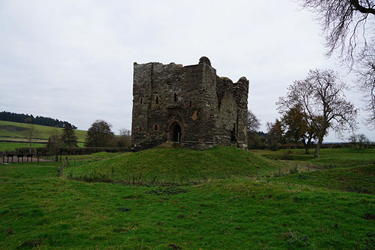
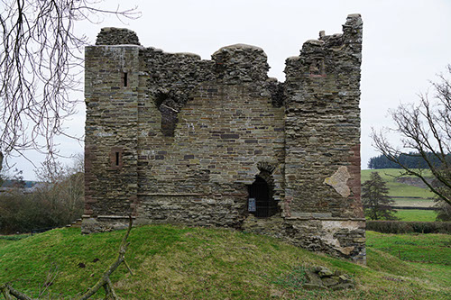
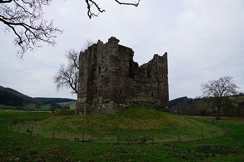
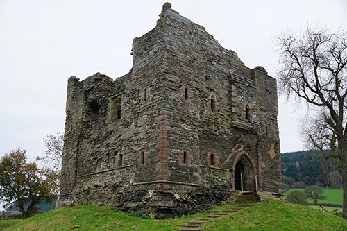
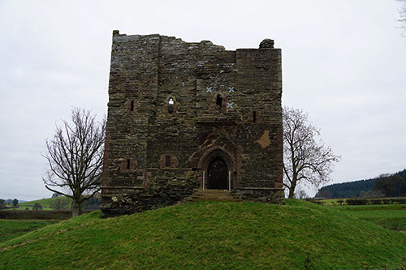
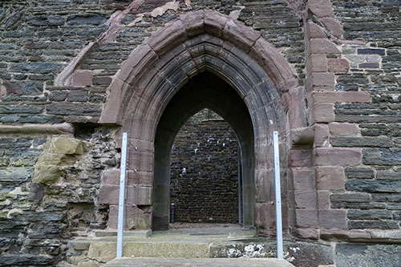
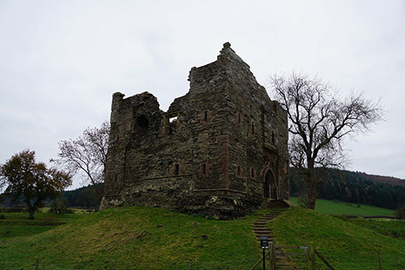
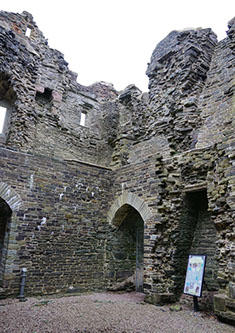
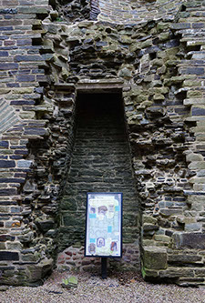
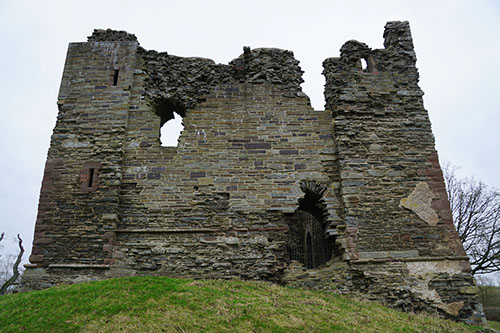
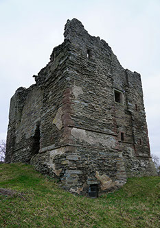
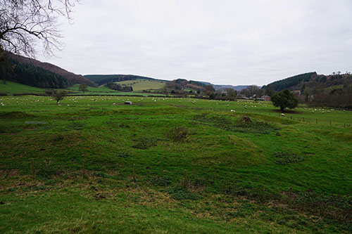
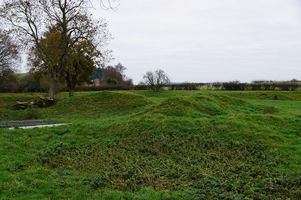
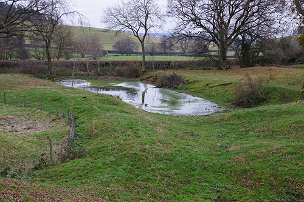
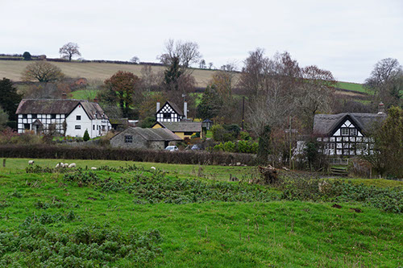